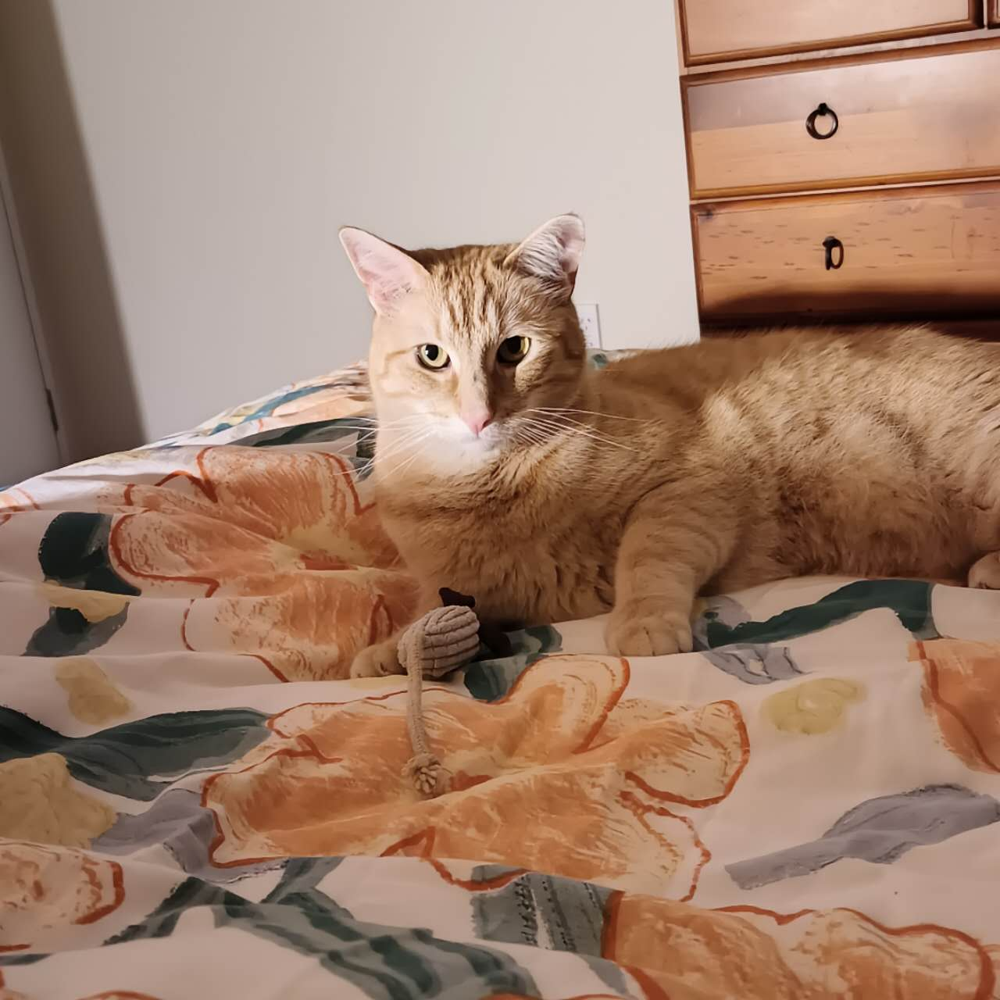
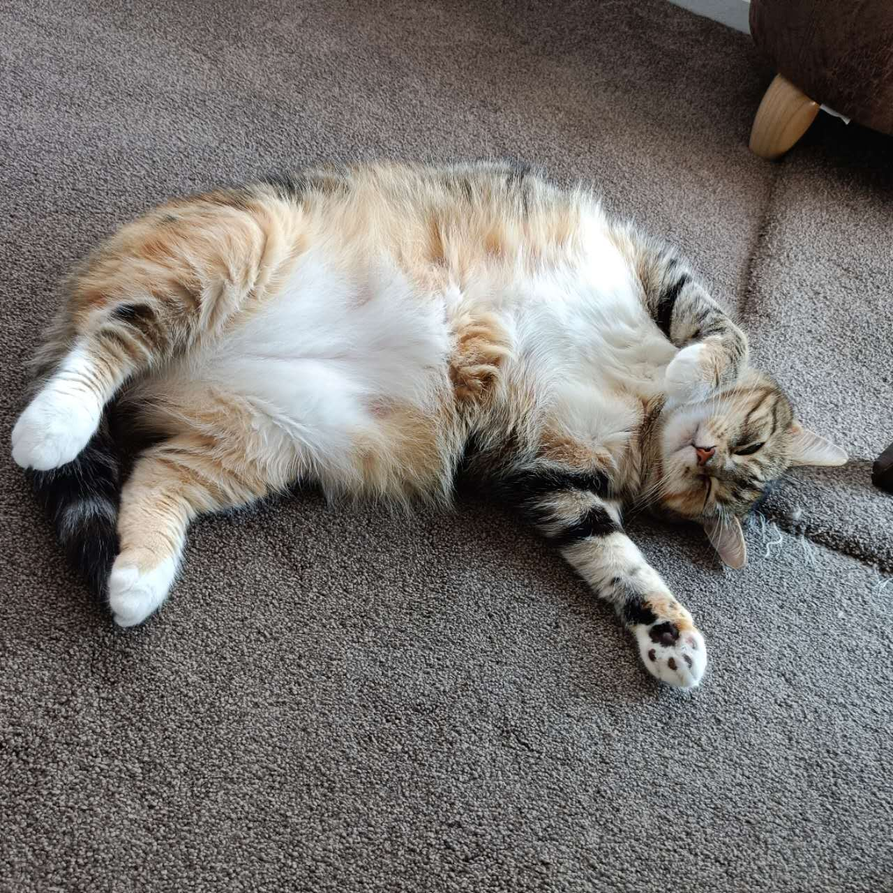
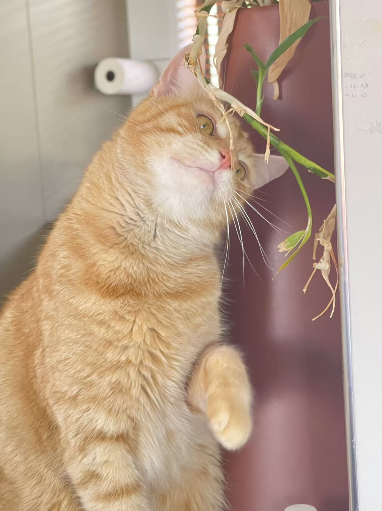

01 / THE GINGER ONE
Ginger
A little sunshine in a fur coat.
WELCOME TO MARY’S CAT CAFÉ
Slow down, settle in, and meet your new furry friends. A cosy corner for good coffee and even better company.
Meet our cats ↗
A NOTE FROM MARY
Hello, I’m Mary — the human behind the café, and the very proud cat mum of Ginger, Kelly Gao and Traveler.
This little space brings together the things I love: cats, a comforting cuppa, and time to enjoy the small things. Come get to know my three furry companions. They’re the heart of it all.
With love, Mary ♡THE REAL STARS OF THE SHOW
Three lovely cats.
Three reasons to smile.
A little sunshine in a fur coat.

02 / THE FLUFFY ONEFluffy paws. Expert-level lounging.

03 / THE CURIOUS ONEA curious little face, full of wonder.
TAKE A BREATH. STAY A WHILE.
Leave a little room in your day for a quiet moment
and some whiskered company.
THE LITTLE THINGS
A few favourite moments from Mary’s camera.
SOMETHING COSY IS COMING
We’re getting our little café ready.
Opening hours and location will be shared here soon.
Let the cats come to you, give sleepy cats their space, and keep treats for the humans. A gentle hello goes a long way.